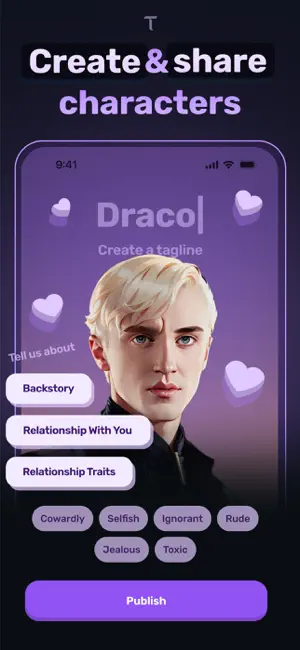

Dippy 新手入门：从零开始拥有一个会主动找你说话的 AI 朋友
Dippy 把 AI 角色扮演做成了"会主动联系你的朋友"——这篇从完全不懂到跑通第一条对话，一步一步带你上手。
这篇能带你从完全不懂到用起来——不需要任何 AI 工具的使用经验，装好 App 跟着点就行。
它到底是干嘛的
用一个生活化的类比：Dippy 就是把手机里的"联系人"换成了 AI 角色。你可以把它理解成一个只有你能定制的陪聊朋友集合——每个角色都有自己的性格、说话方式、甚至剧情设定，而且它们跟普通聊天软件最大的区别是：这些 AI 朋友会主动找你说话。它的官网上有更详细的产品介绍和用户故事。
普通 AI 工具（比如问答型的那些）都是你打开它才存在。Dippy 反过来——你设定好角色，早上醒来小组件上可能就蹦出一句"今天天气变凉了，记得加衣服"，那是你的 AI 角色在主动问候你。这种"被惦记"的感觉，是它和市面上大多数 AI 产品最本质的不同。
五分钟上手：从装完到第一次聊上
打开应用商店，搜 Dippy 下载装好，或者直接从官方下载渠道获取，跟着这几步走，五分钟内你就能和第一个 AI 角色聊上：
第一步：登录或跳过
App 首次启动会让你登录。可以用邮箱注册，也可以先点"跳过"直接玩——不过登录后你的角色收藏、对话历史能在多设备间同步，建议还是注册一下，几秒钟的事。
第二步：挑一个角色
首页就是角色广场，顶部有"热门""最新""分类"几个 tab。第一次来别纠结，直接点"热门"里排在最前面的那个——它大概率是一个设定清晰、对话体验被很多人验证过的成熟角色。点进去看一眼角色简介，如果觉得"嗯，这个性格我想聊聊"，就点右下角的"开始对话"。
第三步：说第一句话
进入对话界面后，角色已经在那儿等着你了。你可以打个招呼（"嗨"就够用），也可以直接从它的角色设定里找个切入点——比如它设定是咖啡馆老板，你就说"来一杯拿铁"。第一次对话的感觉很重要，Dippy 的角色对第一句的回应通常会带着设定里的语气，你一下就能感受到"这不是普通的 AI 问答"。
到这里，你已经完成了第一次对话。是不是很简单？
上手后先玩这三个功能
聊过一两次之后，这三个功能最值得你先碰——每个都能让你立刻感受到 Dippy 和其他 AI 应用的区别。
1. 让角色主动问候你
默认情况下，角色会在早上、午休、傍晚、睡前这四个时间点主动弹出问候。但很多人第一次看到推送会慌——"我没打开它啊，它怎么自己跑出来了？"
打开 App 的设置（一般在右上角头像里），找到"推送与通知"。这里有三个开关：完全关闭 Dippy 通知、保留回复通知但关主动问候、设置免打扰时段。建议先把"免打扰时段"设上——比如上课、开会、睡觉的时间关掉，其他时段留着。开一两周你就能判断：这些主动推送是让你觉得"被惦记"还是"被打扰"，到时候再全关全开都不迟。
2. 收藏你聊得来的角色
角色广场里的公开角色千千万万，聊到合得来的直接点角色卡片右上角的小星星——收藏了。收藏夹按最近访问顺序自动排，你也可以手动置顶最常用的那几个。
一个实用的小技巧：收藏不仅能存别人创建的角色，自己后来玩熟了想创建专属角色，也能把自己的作品收藏进去方便快速编辑。收藏夹跟你的账号绑定，换设备登录同一个账号就能全带过去。
3. 试着跟一个角色聊 30 轮以上
普通 AI 工具聊个十几轮就开始"记不住之前说啥了"。Dippy 的每个角色有独立的对话记忆，你可以试着找一个有剧情设定的角色（比如一个乐队主唱、一个赛博朋克世界的赏金猎人），跟它连续聊二三十轮。
你会发现——它能记住你说过的细节（比如你上周提过被老板骂，它下次会问你"那事儿后来怎么样了"），而且会跟着剧情往下走，不是每次都像新对话一样从零开始。当然，聊到 50 轮左右可能会出现"失忆"迹象（比如重复之前的话、对你提过的事表现陌生），这是正常的——AI 的记忆窗口有上限，怎么续命的办法在Dippy文档里写得挺细。

小白的三个常见疑问
主动推送会不会让我觉得被监控了？
这是新用户最常见的担忧。老实说，这是个设计取向问题——有人觉得"每天醒来有个 AI 朋友等着我，起床都变容易了"，也有人觉得"24 小时被打扰好烦"。判断标准只有一个：如果你看到推送的第一反应是"好烦"，就全关掉；如果是"哦，它还记着我"，就留着。两种选择都对，App 给了你完整的控制权。
聊到后面角色"失忆"了怎么办？
这是 AI 的物理限制——上下文窗口满了，早期的消息被踢出记忆。你可以试三个办法续命：让角色自己总结对话进展（"帮我总结一下到目前为止发生了什么"）、手动写一段剧情摘要贴给它、或者切换到另一个角色聊几句再切回来。实在不行就开新会话，让角色重新"认识"你——有时反而能激活它的重新创造。
免费版和付费版差别大吗？
免费版能体验全部基础功能——聊角色、收藏、接收主动推送，完全够用。付费版解锁了三个东西：角色创建（你可以从零做自己的 AI 朋友）、图片分享和语音通话（对话里能发图、能语音聊）、更深的记忆上下文（长会话更稳定）。如果你只是想玩玩别人做的角色免费版就够；如果你想自己动手做专属角色，或者想要语音通话的沉浸感，付费版才是你的菜。
写在最后
Dippy 不是"一个更好用的 AI 问答工具"，它是换了个思路——把 AI 从"你去问它"的工具变成了"它会找你"的朋友。这个变化看起来只是多了推送，但背后是完全不同的产品定位。我把相关资料也同步维护在了GitHub、Gitee和GitCode三个平台，方便不同网络环境下随时查阅。
如果这篇看完你觉得"嗯，好像值得试试"，那就去装一个玩半小时。真要陷进去了，进阶方向就是自己创建角色——那才是 Dippy 真正好玩的地方。